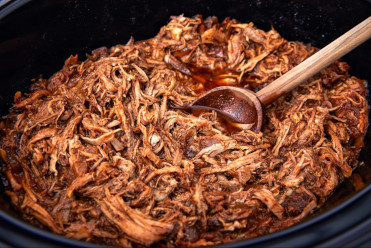

Slow Cooker Pulled Pork

Description:
Oh yummy, your favorite slow cooker pulled pork!
Ingredients:
- Boneless pork tenderloin roast ~2lbs
- 3 medium yellow onions
Preparation Instructions:
- Slice onions and evenly spead them as a bed across bottom of slow cooker
- Place tenderloin in slow cooker atop onions
- Season with salt, pepper, garlic powder
- Cover tenderloin with poured over Sweet Baby Ray's Barbeque Sauce
- Cover and cook in slow cooker for 3 hours on high
- Carefully flip tenderloin
- Repeat steps 3-5
- Turn off slow cooker, allow to cool off for 30-60 minutes
- Finely shred pork with tongs, mix well
Back to Odin Recipes Homepage